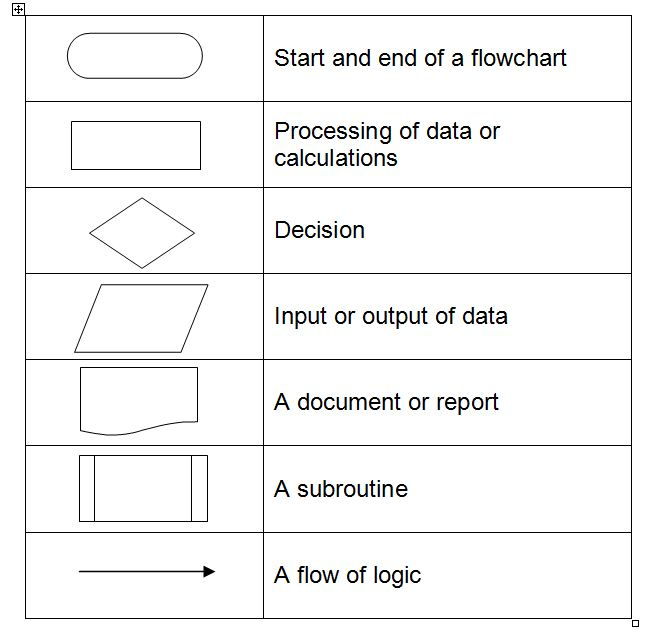

<div id="jsn-maincontent" class="span9 order1 row-fluid">
  <div id="jsn-maincontent_inner">
    <div id="jsn-centercol">
      <div id="jsn-centercol_inner">
        <div id="jsn-mainbody-content" class="jsn-hasmainbody">
          <div id="jsn-mainbody-content-inner1">
            <div id="jsn-mainbody-content-inner2">
              <div id="jsn-mainbody-content-inner3">
                <div id="jsn-mainbody-content-inner4" class="row-fluid">
                  <div id="jsn-mainbody-content-inner" class="span12 order1">
                    <div id="jsn-mainbody">
                      <div id="system-message-container"></div>

                      <div
                        class="item-page"
                        itemscope
                        itemtype="https://schema.org/Article"
                      >
                        <meta itemprop="inLanguage" content="en-GB" />

                        <div itemprop="articleBody">
                          <p></p>
                          <h1
                            class="ContentHeading"
                            style="text-align: center"
                            align="center"
                          >
                            Describing the flow of data using flowcharts
                          </h1>
                          <p>
                            <strong
                              ><span class="NormalContentHeading"
                                >Introduction</span
                              ></strong
                            ><br />
                            There are a number of ways to describe a system and
                            the flow of data around it. One way is to use a
                            flowchart. We will describe the symbols used in a
                            flowchart and give an example of their use.
                          </p>
                          <p>
                            <strong
                              ><span class="NormalContentHeading"
                                >Symbols</span
                              ></strong
                            ><br />
                            The following symbols are the most common ones used
                            in flowcharts, although there are others and if you
                            read around this topic, you may find slight
                            variations in their use.
                          </p>

                          <p align="center">
                            
                          </p>
                          <p>
                            <strong>An example of a flowchart</strong><br />Here
                            is an example of a flowchart that describes the
                            discount given for buying products in a club’s shop.
                            The discount given depends upon your membership
                            type.
                          </p>
                          <p>
                            
                          </p>
                          <p>
                            <br />You begin and end the flowchart with a start /
                            stop symbol. You then input your membership type.
                          </p>
                          <ul>
                            <li style="list-style-type: none">
                              <ul style="list-style-type: disc">
                                <li>
                                  If it is gold, you get 25% discount and a
                                  message is displayed stating the discount
                                  given.
                                </li>
                                <li>
                                  If it is silver, you get 20% discount and a
                                  message is displayed stating the discount
                                  given.
                                </li>
                                <li>
                                  If it is bronze, you get 15% discount and a
                                  message is displayed stating the discount
                                  given.
                                </li>
                                <li>
                                  If you are not a member, you get 10% discount
                                  and a message is displayed stating the
                                  discount given.
                                </li>
                              </ul>
                            </li>
                          </ul>
                          <p>
                            <strong
                              >An example of a FOR loop and using
                              subroutines</strong
                            ><br />Suppose you had to carry out a set of
                            instructions a fixed number of times. In programming
                            code, you would use a FOR loop for this. But
                            stepping back for a moment, how might you represent
                            this as a flowchart?
                          </p>
                          <p>
                            
                          </p>
                          <p>
                            There are some useful tools for making flowcharts
                            around. There is a drawing toolbar in both Word and
                            OpenOffice that can be used for drawing neat
                            flowcharts. Meesoft's ‘Diagram Designer’ is also
                            excellent (and free). If your school has Logicator,
                            that's also an excellent way of getting experience
                            producing good flowcharts.
                          </p>
                          <p></p>
                        </div>
                      </div>
                    </div>
                  </div>
                </div>
              </div>
            </div>
          </div>
        </div>
      </div>
    </div>
  </div>
</div>
